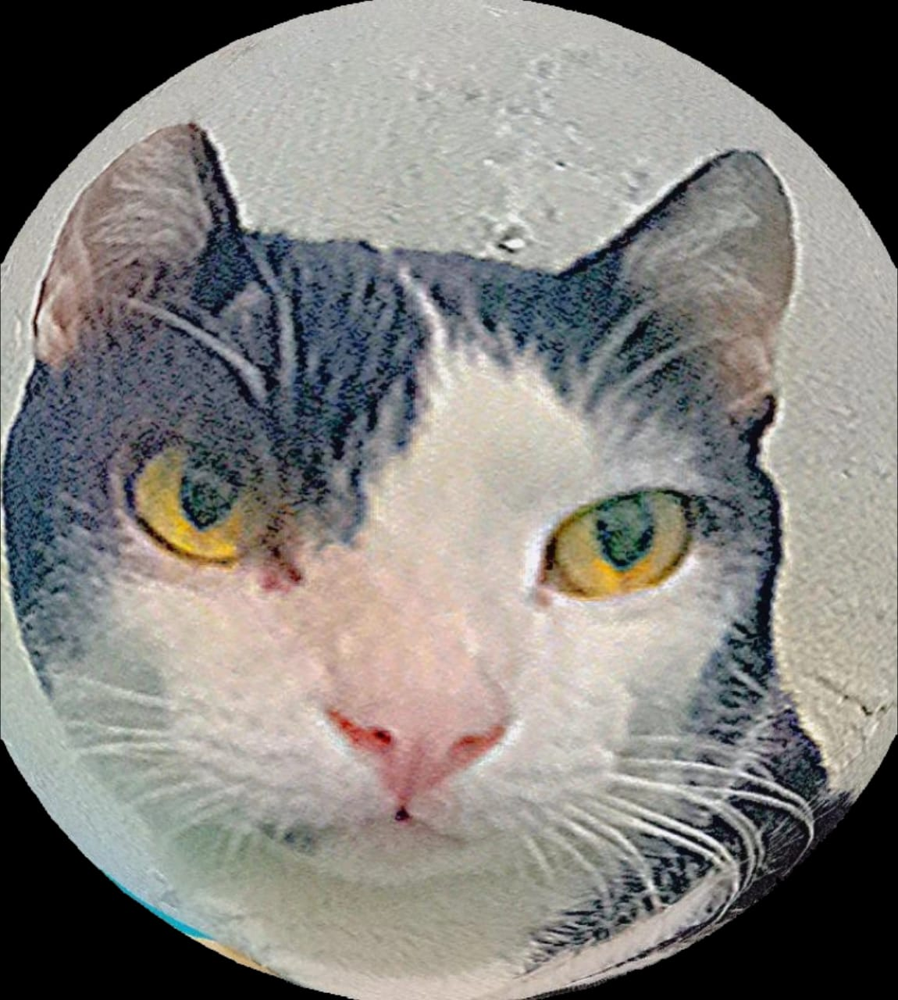

`<html>
<head>
  <title>Beranda Ayuni Fathia</title>
  <link rel="stylesheet" type="text/css" href="webstyle.css">
  <link rel="icon" href="favicon.ico" type="image/x-icon">
</head>
<body>
  <div class="container">
    <!-- NAVIGATION BAR -->
    <div class="container-navbar">
      <ul class="ul-navbar">
        <li class="li-navbar">
            <a href="index.html" class="a-navbar">BERANDA</a></li>
        <li class="li-navbar">
            <a href="tentang.html"  class="a-navbar">TENTANG SAYA</a></li>
        <li class="li-navbar">
            <a href="hobi.html" class="a-navbar">HOBI</a></li>
        <li class="li-navbar">
            <a href="kontak.html"  class="a-navbar">KONTAK</a></li>
      </ul>
    </div>
    <!-- NAVIGATION BAR SELESAI -->
    <meta charset="utf-8"> <audio controls autoplay hidden>
      <source src="bounce.mp3" type="audio/mpeg">
    </audio>
  <header class="header">
    <h1 align="center"><b><font color="ffc1b6">Assalamu'alaikum</font></b></h1>
    <h2 align="center"><b><font color="ffc1b6">Selamat Datang di Beranda Web Pribadi Saya:D </font></b></h2>
  </header>
  <section>
    <center>
    
    </center>
    <h4><font color="white">Web ini berisi perkenalan singkat pribadi saya dan 
      merupakan salah satu tugas informatika dari guru saya yaitu Pak Sutriadi M.Pd.</font></h4>
  </section>
  <footer>
    <p>Copyright 2024 | Dibuat dengan HTML dan CSS</p>
  </footer>
</body>
</html>